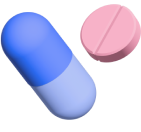

질염이야기
세균성 질염
원인은?
질내 면역력 저하로 인해 질 내부로 유입된 세균들이 10배에서 1,000배 가량 증가하면서 발생하게 되는 염증이에요.
잦은 질세척이나 항생제 복용을 하는 경우
증상은?
맑은 회백색의 분비물이 나오고, 생선비린내, 말린 오징어 냄새 같은 악취가 나요.
외음부나 질의 가려운 느낌과 통증은 없는 편
생리 전후, 성관계 이후 증상이 심해지기도 해요.
세균성 질염이 심해질 경우 골반염의 위험성이 증가되요, 임산부의 경우 합병증 위험이 있어서 꼭 조심해야해요.
왜 생기는 걸까요?
전체 여성의 절반이
경험하는 질염
정상적인 면역력을 갖고 있는 경우, 질 내 유산균이 pH 4.5의 약산성 환경을 만드는데, 이런 환경은 좋은 세균들이 증식하는 것을 억제하게 됩니다.
하지만 면역력이 떨어져 질 내 유익균인 락토바실러스 균이 감소하게 되면, 약산성 환경이 무너지게되고 빈 틈을 타 혐기성 세균이 증가하면서 염증이 발생하게 되요.
주로 잦은 성관계 또는 과도한 질 세정이나 항생제 복용 등으로 잘 생기며 냄새를 동반한 다량의 분비물과 통증 등이 생겨요.
어떻게 관리할까요?

콘텐츠를 평가해주세요
이 콘텐츠가
도움이 되었나요?